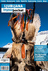

Disclaimer: These pages are not actively maintained, and some of the practical information on the site is out of date. I am working on a new version of the site that will focus more on my photos and memories of travel in Southeast Europe, and less on practical details that too easily become obsolete. In the meantime, please treat the information here with caution.
Slovenia :: Books
Travel Guides
Short descriptions of Slovenia appear in four of Lonely Planet's regional guides listed in the Overview section: Europe on a Shoestring, Eastern Europe, Mediterranean Europe, and Southeastern Europe. For good measure it is also included in their guide to Central Europe.
 |
The Rough Guide to Slovenia (3rd edition published April 2010) - Norm LongleyTypically detailed coverage from Rough Guides, allocating a generous 352 pages to this small country. |
More about this book: Amazon (USA)Amazon (UK) |
 |
Slovenia - Lonely Planet Country Guide (8th edition published May 2016)I have used both the Lonely Planet and Rough Guide on different visits to Slovenia. Although I generally prefer Rough Guides, in this instance there is little to choose between them, and the Lonely Planet is now more up to date by several years |
More about this book: Amazon (USA)Amazon (UK) |
 |
Slovenia - The Bradt Guide (2nd edition published May 2008) - Robin & Jenny McKelvie |
More about this book: Amazon (USA)Amazon (UK) |
 |
The Julian Alps of Slovenia - Cicerone Walking Guide (2nd edition published May 2015) - Justi Carey, Roy ClarkMore than 50 mountain walks and short treks, organised around five bases in northwest Slovenia (Kranjska Gora, Bovec, Kobarid, Bled, and Bohinj. The routes range from relatively easy valley walks to high-level treks requiring more experience. Cicerone also publishes guides to the Slovene High Level Route and the Karavanke mountain range. |
More about this book: Amazon (USA)Amazon (UK) |
|  |
Ljubljana In Your PocketAs well as a typically detailed city guide to Ljubljana, IYP covers a range of destinations in Slovenia, both urban and rural. | More about this book: In Your Pocket |
Background Reading
It appears that very little has been written about Slovenia in English. Even the books about the former Yugoslavia listed in the Overview tend to pass over Slovenia in silence. The modern travelogues The Impossible Country and Through the Embers of Chaos have only a handful of references to Slovenia between them, and the index of Black Lamb and Grey Falcon points to only three references in its 1100 pages.
 |
The Radetzky March - Joseph Roth
I suppose I'm stretching a point by classifying The Radetzky March, the great novel of the Austro-Hungarian Empire, as a book about Slovenia or the Balkans. But its central characters do come from Slovenia, and anyway this book deserves to be read by anyone with an interest in European history or literature. Roth creates a compelling sense of impending doom, as the Empire's elaborate rituals and codes of behaviour prove insufficient to stave off its collapse. |
More about this book: Amazon (USA)Amazon (UK) |